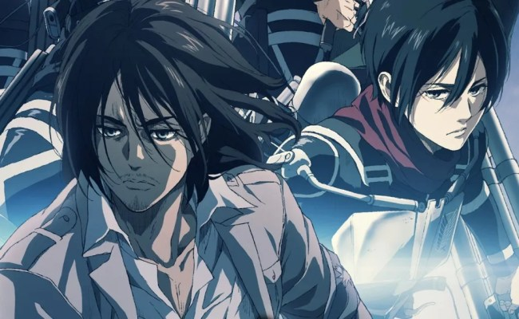

Attack On Titan

Attack on Titan Season 4
Ataque a los Titanes es un anime basado en el manga homónimo de Hajime Isayama, y fue uno de los mayores éxitos durante el 2013, lo que ha inspirado varios spin offs y hasta una película de acción real programada para el 2015.
Ya tenemos fecha final para la última temporada de 'Attack on Titan' o 'Shingeki no Kyojin'. Shingeki no Kyojin (Attack on Titan) ha anunciado su fecha de estreno para el próximo 9 de enero de 2022.
Es decir, a comienzos del año que viene, la producción anime de mayor éxito de los últimos tiempos regresará a la televisión y las principales plataformas para encaminarse a su conclusión.
Junto al anuncio del estreno de los últimos episodios a partir del 9 de enero, se ha presentado un teaser. El estudio de animación Studio MAPPA mostró una gran cantidad de tomas generadas por computadora Los espectadores responden bien a las tomas generadas por CGI esta vez, ya que su uso en la cuarta temporada hasta ahora ha recibido criticas mixtas.
